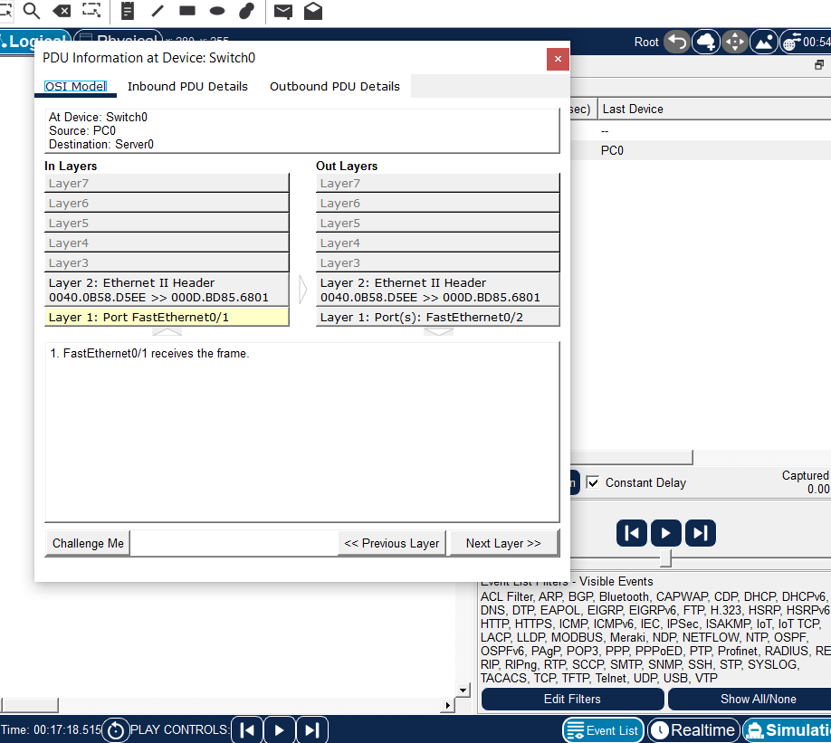
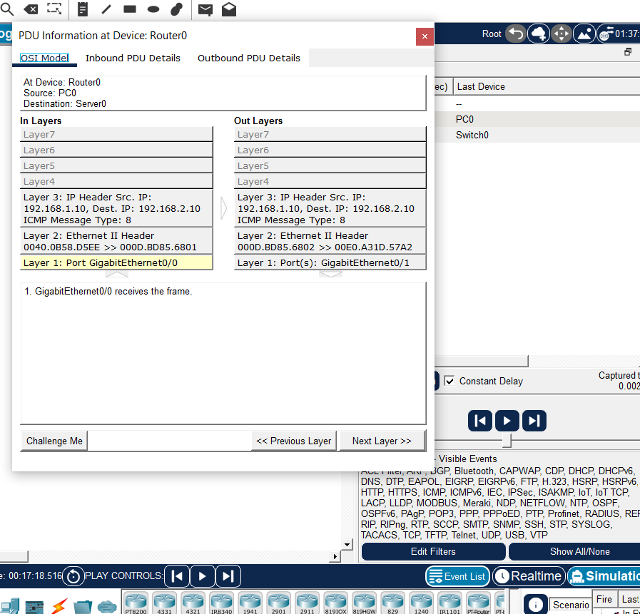
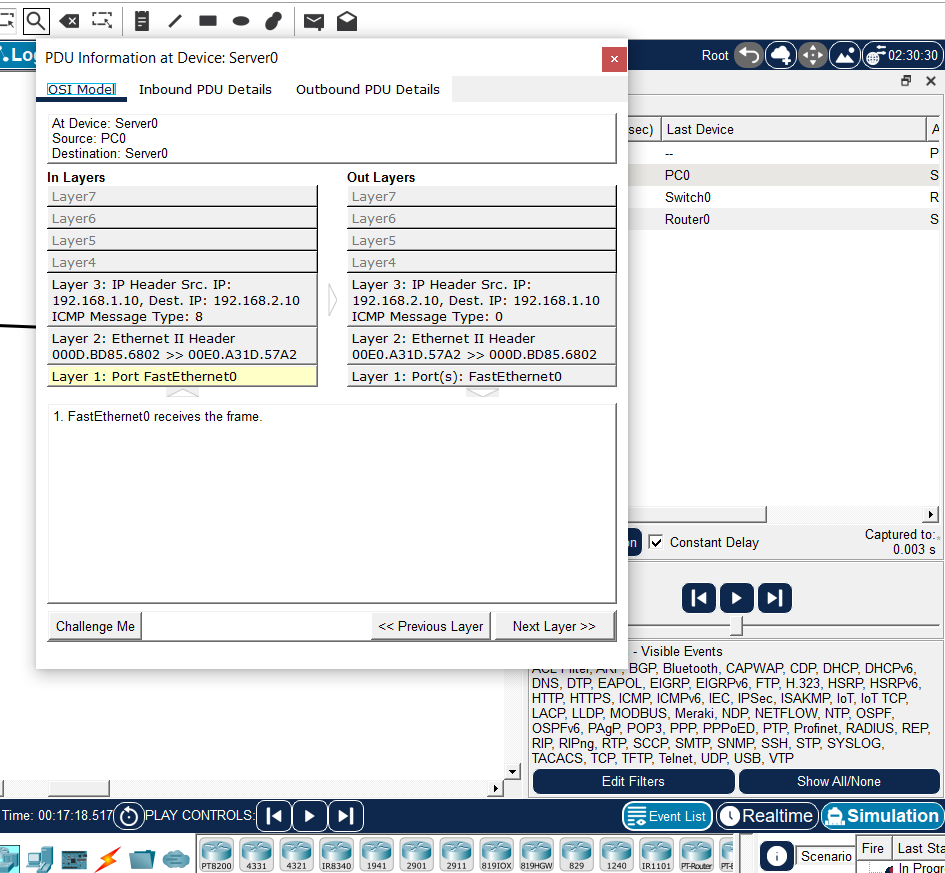

Introduction
Throughout Module 5, we have learned that network communication is not handled by one protocol or one device. Different protocols perform different tasks, while different network devices process the information at different layers of the networking models.
In this practical exercise, we use Cisco Packet Tracer to observe these ideas in action. Instead of only checking whether two devices can communicate, we use Simulation Mode to watch the communication move through the network step by step.
The exercise helps connect the theory from the previous topics with what actually happens when information travels from one device to another.
What We Are Demonstrating
The main purpose of this exercise is to observe how a message travels through different network devices and how different protocols are involved in the process.
We will observe the roles of Ethernet, MAC addresses, IP addresses, ICMP, switches, routers, and physical interfaces. We will also connect what we see in Packet Tracer to the OSI and TCP/IP models.
The communication path used in the exercise is:
PC0 → Switch0 → Router0 → Server0
The response can then travel back through the network:
Server0 → Router0 → Switch0 → PC0
Network Topology
01
PC0
PC0 is the source device that starts the test communication. Its IP address is 192.168.1.10.
02
Switch0
Switch0 connects devices on the local Ethernet network and forwards frames using Layer 2 information.
03
Router0
Router0 connects the two different IP networks and forwards packets from one network to another.
04
Server0
Server0 is the destination device. Its IP address is 192.168.2.10.
IP Addressing Used in the Lab
We used two different networks so that the router would have an important role in the communication.
The first network is 192.168.1.0/24 and the second network is 192.168.2.0/24.
PC0 was configured with:
IP address: 192.168.1.10
Subnet mask: 255.255.255.0
Default gateway: 192.168.1.1
Router0 was configured with two interfaces:
GigabitEthernet0/0: 192.168.1.1
GigabitEthernet0/1: 192.168.2.1
Server0 was configured with:
IP address: 192.168.2.10
Subnet mask: 255.255.255.0
Default gateway: 192.168.2.1
The default gateway is important because PC0 and Server0 are on different networks. When PC0 needs to communicate with a destination outside its own network, it sends the traffic toward Router0.
Why We Used Static IP Addresses
The devices were configured with static IP addresses instead of using DHCP.
DHCP could automatically provide IP addresses, subnet masks, gateways, and other network information. However, using DHCP would introduce additional DHCP messages into the simulation.
For this exercise, static addressing makes the network easier to understand because we already know the exact addresses assigned to PC0, Router0, and Server0.
This allows us to concentrate on the main purpose of the lab: understanding protocols, layers, frames, packets, and how devices process network communication.
Building the Network
The topology was built using four devices:
PC0 → Switch0 → Router0 → Server0
Copper straight-through cables were used to connect the Ethernet interfaces.
The connections were:
- PC0 FastEthernet0 to Switch0 FastEthernet0/1
- Switch0 FastEthernet0/2 to Router0 GigabitEthernet0/0
- Router0 GigabitEthernet0/1 to Server0 FastEthernet0
The router interfaces initially had to be enabled because router interfaces can be administratively disabled by default in Packet Tracer.
The interfaces were enabled using the no shutdown command.
Testing the Network
Before entering Simulation Mode, the IP configuration was checked and communication between PC0 and Server0 was tested.
The test was successful, confirming that the addressing, default gateways, router interfaces, and connections were correctly configured.
The ping result itself is not included as a main screenshot here because basic IP connectivity and ping were already covered in Module 1.
Instead, this lab focuses on what happens inside the network while the communication is taking place.
Entering Simulation Mode
Packet Tracer provides Realtime Mode and Simulation Mode.
Realtime Mode allows the network to operate normally, while Simulation Mode allows individual network events to be observed.
For this exercise, Simulation Mode was used because we wanted to see the communication moving through each device.
The Capture / Forward control was used instead of allowing the simulation to play automatically. Capture / Forward moves the event forward one step at a time, making it easier to study what happens at each stage.
Creating the Simple PDU
Packet Tracer's Add Simple PDU tool was used to create the test communication.
The first device selected was PC0, which became the source. The second device selected was Server0, which became the destination.
This created a simulated communication path:
PC0 → Switch0 → Router0 → Server0
Packet Tracer then allowed the communication to be observed through the Event List and PDU Details window.
Stage 1: PC0 to Switch0
The first stage of the communication is:
PC0 → Switch0
PC0 sends the communication onto its local network. The Ethernet frame travels from PC0's network interface to the switch.
In the PDU Details window, the OSI Model section showed information associated with the lower layers.
Layer 1: Physical
Layer 1 deals with the actual transmission of bits through the physical medium. In our topology, the communication travels through an Ethernet cable.
Packet Tracer showed the FastEthernet port through which the communication entered the switch.
Layer 2: Data Link
At Layer 2, Ethernet is used. Ethernet frames contain MAC address information used for communication across the local network.
The switch uses Layer 2 information to determine where the frame should be forwarded.

This screenshot shows the frame being processed by Switch0. The frame entered through the port connected to PC0 and was then prepared for forwarding toward Router0.
What the Switch Does
A switch primarily operates at Layer 2 of the OSI model. It connects devices on a local network and forwards Ethernet frames.
Switches learn MAC addresses by examining the source MAC addresses of frames that arrive at their ports. These learned addresses can be stored in a MAC address table.
When the switch needs to forward a frame, it can use this information to determine the appropriate outgoing interface.
In our topology, the frame entered Switch0 through FastEthernet0/1 and was forwarded through FastEthernet0/2, which is connected to Router0.
Stage 2: Switch0 to Router0
After Switch0 processes the frame, it forwards the communication toward Router0.
The next part of the path is:
Switch0 → Router0
Router0 receives the Ethernet frame through its GigabitEthernet0/0 interface.
This is where the role of the router becomes important because PC0 and Server0 belong to different IP networks.
Stage 3: Router0 Processes the Communication
Router0 connects:
192.168.1.0/24
and
192.168.2.0/24
When the router receives the frame, it processes the information required to determine where the IP packet should be forwarded.
Layer 1
The router receives the incoming electrical or physical signal through its GigabitEthernet0/0 interface.
Layer 2
The router receives an Ethernet frame. The Layer 2 information belongs to the local link between Switch0 and Router0.
Layer 3
The router examines the IP information contained in the packet. The destination IP address is important because the router uses network-layer information to determine where the packet should go next.

The screenshot shows Router0 processing Layer 3 IP information together with the Layer 2 Ethernet and Layer 1 interface information.
MAC Addresses and IP Addresses
The PDU information helps demonstrate that MAC addresses and IP addresses have different roles.
A MAC address is associated with a network interface and is used for Layer 2 communication such as Ethernet delivery on a local network.
An IP address is a logical address used at Layer 3. IP allows packets to be addressed and routed between different networks.
In simple terms:
MAC addresses help with local frame delivery.
IP addresses help identify the destination at the network layer and allow routers to forward packets between networks.
ICMP: Internet Control Message Protocol
The Simple PDU used in this exercise uses ICMP.
ICMP stands for Internet Control Message Protocol.
ICMP is associated with the Internet layer of the TCP/IP model and the Network layer of the OSI model. It is used to exchange control, diagnostic, and error-related information about IP communication.
One of the best-known uses of ICMP is the ping command.
When a device sends a traditional ping request, it sends an ICMP Echo Request. If the destination responds, it sends an ICMP Echo Reply.
ICMP Type 8: Echo Request
ICMP Type 8 is an Echo Request.
It is used to ask the destination whether it can receive the message and respond.
In simple terms, the request is like asking:
"Are you reachable, and can you reply to me?"
This is the request side of the traditional ping process.
ICMP Type 0: Echo Reply
ICMP Type 0 is an Echo Reply.
It is sent as the response to an Echo Request.
In simple terms:
"I received your request and I am responding."
During the Packet Tracer exercise, the PDU information displayed ICMP Type 8 and Type 0, allowing us to see the request and response sides of the communication.
Other Important ICMP Messages
ICMP contains more message types than Echo Request and Echo Reply. Some important examples include:
Destination Unreachable
Indicates that a destination or required service cannot be reached.
Time Exceeded
Indicates that a packet's time-to-live has reached zero. This type of message is important in tools such as traceroute.
Echo Request
Requests an echo response from another device. The commonly used IPv4 type is Type 8.
Echo Reply
Responds to an Echo Request. The commonly used IPv4 type is Type 0.
ICMP is different from TCP and UDP. It does not use TCP or UDP port numbers.
Stage 4: Router0 to Server0
After Router0 determines that the packet needs to travel through its second interface, the communication continues:
Router0 → Server0
Router0 forwards the communication onto the 192.168.2.0/24 network, where Server0 is located.
Server0 receives the Ethernet frame through its network interface and processes the information.

The PDU Details window at Server0 showed Layer 3 IP information, Layer 2 Ethernet information, and Layer 1 physical interface information.
This confirms that the communication has reached the destination device.
Why Only Some OSI Layers Appear
One thing we observed during the exercise was that Packet Tracer did not always display information for all seven OSI layers.
This does not mean that the other layers are not important. Packet Tracer is showing the protocol processing that is relevant to the particular PDU and device at that point.
Our Simple PDU uses ICMP. ICMP is carried by IP and does not use TCP or UDP as its transport protocol.
Therefore, we should not expect this particular PDU to show a TCP header or UDP header.
The simplified protocol structure for this communication is:
ICMP message → IP packet → Ethernet frame → Physical transmission
TCP: Transmission Control Protocol
TCP stands for Transmission Control Protocol. It is a transport-layer protocol.
Unlike our ICMP test, TCP is used when an application needs transport services such as reliable and ordered delivery.
Connection-Oriented Communication
TCP is connection-oriented. Before normal application data is exchanged, TCP establishes a connection between the communicating endpoints.
The process is commonly described using the TCP three-way handshake:
SYN → SYN-ACK → ACK
This allows the two endpoints to establish the TCP connection before normal data transfer begins.
Reliable Delivery
TCP uses sequence numbers, acknowledgements, retransmission, and other mechanisms to provide reliable communication.
If transmitted data is not successfully acknowledged, TCP can retransmit the missing data.
Ordered Delivery
TCP uses sequence information so that data can be reconstructed in the correct order at the receiving side.
Flow Control
TCP provides flow-control mechanisms that help prevent a sender from sending data faster than the receiver can handle.
UDP: User Datagram Protocol
UDP stands for User Datagram Protocol. It is also a transport-layer protocol.
UDP provides a simpler transport service than TCP. It does not establish a TCP connection before sending data.
Connectionless Communication
UDP sends datagrams without the connection-establishment process used by TCP.
Less Built-in Overhead
UDP does not provide the same built-in reliability, acknowledgement, ordering, and retransmission mechanisms that TCP provides.
This makes UDP useful for applications that may prefer lower protocol overhead or need to handle timing and reliability at the application level.
DNS is one example of a protocol that can use UDP. Some real-time applications can also use UDP when the application design benefits from its simpler transport behaviour.
TCP and UDP Compared
TCP and UDP both operate at the transport layer, but they provide different services.
TCP: connection-oriented, reliable, ordered, and includes acknowledgements, retransmission, and flow-control mechanisms.
UDP: connectionless and simpler, without TCP's built-in reliability and ordering mechanisms.
Neither protocol is automatically better. The appropriate choice depends on what the application requires.
Understanding Port Numbers
TCP and UDP use port numbers to identify applications or services at the transport layer.
An IP address helps identify the network destination, while a port number helps identify the particular application or service involved in the communication.
A useful simplified way of remembering this is:
IP address = where the communication needs to go
Port number = which application or service should receive it
Our ICMP Simple PDU does not use TCP or UDP ports. That is why no TCP or UDP port information appeared in the ICMP simulation.
Encapsulation
Encapsulation is the process of adding protocol information as data moves down through the networking layers before transmission.
A simplified example using TCP is:
Application Data
↓
TCP Header + Data = Segment
↓
IP Header + Segment = Packet
↓
Ethernet Header + Packet + Trailer = Frame
↓
Bits
Our ICMP communication is slightly different because ICMP does not use TCP or UDP.
In simplified form:
ICMP Message
↓
IP Packet
↓
Ethernet Frame
↓
Bits
What Happens at the Router?
The router is particularly important because it connects different networks.
Router0 receives a Layer 2 frame through its first interface. It processes the information inside the frame, including the IP packet.
The router then determines where the IP packet should be forwarded.
When the packet leaves through the router's other interface, it is placed into a new Layer 2 frame for the next local link.
This means the Ethernet frame used on one local link is not simply carried unchanged across the entire path.
The Layer 2 information is associated with each local link, while the IP packet provides the Layer 3 addressing used to move the communication between networks.
Decapsulation
At the destination, the receiving device processes the information through the appropriate layers. This reverse process is called decapsulation.
In a typical TCP communication, the general idea is:
Bits → Frame → Packet → Segment → Application Data
For our ICMP communication, there is no TCP or UDP segment. The ICMP message is carried inside the IP packet.
The destination therefore processes the Ethernet frame, the IP packet, and the ICMP message so that the communication can be handled by the destination system.
Connecting the Lab to the OSI Model
The OSI reference model contains seven layers:
Layer 7
Application
Provides network services used by applications, such as HTTP, DNS, SMTP, and other protocols.
Layer 6
Presentation
Deals with data representation, formatting, encryption, and compression.
Layer 5
Session
Manages communication sessions between systems.
Layer 4
Transport
Provides end-to-end transport services using protocols such as TCP and UDP.
Layer 3
Network
Provides logical addressing and routing. IP and ICMP are associated with this layer.
Layer 2
Data Link
Handles local link delivery using technologies such as Ethernet and MAC addresses.
Layer 1
Physical
Transmits bits as electrical signals, light, or radio signals through the physical medium.
In our ICMP simulation, the most visible layers were Layers 1, 2, and 3 because the PDU involved physical transmission, Ethernet, IP, and ICMP.
Connecting the Lab to the TCP/IP Model
The TCP/IP model is commonly represented using four layers:
Application: protocols such as HTTP, DNS, and DHCP.
Transport: protocols such as TCP and UDP.
Internet: IP and related protocols such as ICMP.
Network Access: technologies such as Ethernet and Wi-Fi that provide local network delivery and physical transmission.
Our Simple PDU mainly demonstrates the Internet and Network Access layers because it uses ICMP, IP, Ethernet, and the physical network connection.
Protocols Working Together
The lab demonstrates an important networking principle: different protocols can work together without performing the same job.
For example, in a typical web communication:
DNS can help resolve a domain name into an IP address.
HTTP or HTTPS handles communication between the web client and web server.
TCP can provide reliable transport for protocols that use TCP.
IP provides logical addressing and routing.
Ethernet or Wi-Fi can provide local link delivery.
These protocols form part of a larger protocol suite and cooperate through the layered networking architecture.
Packet Tracer Simulation Video
The video below shows the communication being observed in Packet Tracer Simulation Mode.
The packet begins at PC0 and travels through Switch0, Router0, and Server0. The response then travels back through the network toward PC0.
The simulation was advanced using Capture / Forward so that the movement of the communication could be observed one stage at a time.
What the Screenshots Show
The screenshots taken during the simulation provide a closer look at what Packet Tracer was processing at different points in the network.
The Switch0 screenshot shows the Ethernet frame being processed at the switch.
The Router0 screenshot shows the router processing Ethernet and IP information as it forwards the communication between the two networks.
The Server0 screenshot shows the communication arriving at the destination device.
What We Learned From the Exercise
01
Switches
Switches use Layer 2 information such as MAC addresses to forward Ethernet frames on a local network.
02
Routers
Routers connect different IP networks and use network-layer information to forward packets.
03
ICMP
ICMP provides control and diagnostic messaging for IP communication. Echo Request and Echo Reply are used by traditional ping.
04
TCP and UDP
TCP and UDP are transport-layer protocols with different communication characteristics.
05
Encapsulation
Network layers add the information needed for their particular functions as data moves toward transmission.
06
Layered Communication
Different protocols and devices perform different jobs while working together to move information across the network.
Final Summary
This Packet Tracer exercise allowed us to move from the theoretical concepts of Module 5 to a practical network simulation.
We created a network containing PC0, Switch0, Router0, and Server0. PC0 and Server0 were placed on different networks, making Router0 necessary for communication between them.
Using Simulation Mode and Capture / Forward, we observed the communication as it travelled from PC0 to Switch0, from Switch0 to Router0, and from Router0 to Server0.
We saw Ethernet and MAC address information at Layer 2, IP and ICMP information at Layer 3, and physical interfaces at Layer 1.
We also examined ICMP, including the difference between an Echo Request and an Echo Reply, and learned why ICMP is different from TCP and UDP.
TCP provides transport services that include reliable and ordered delivery, while UDP provides a simpler connectionless transport service without TCP's built-in reliability and ordering mechanisms.
Most importantly, the exercise demonstrated that network communication is a layered process. Protocols such as ICMP, IP, Ethernet, TCP, and UDP each have different responsibilities, while devices such as switches and routers process the communication according to their roles in the network.
The practical exercise therefore connects the concepts of communication protocols, protocol models, OSI, TCP/IP, encapsulation, addressing, and network devices into one complete example.